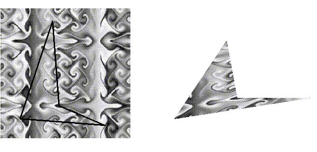
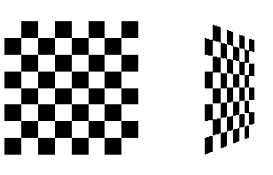
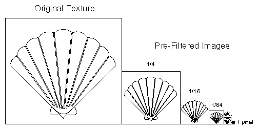
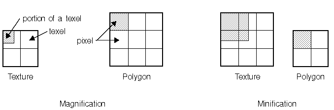
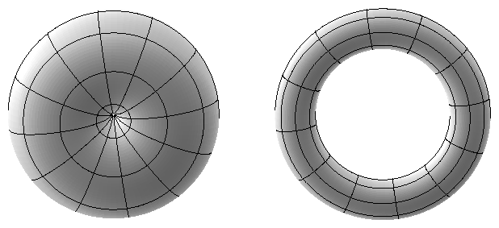
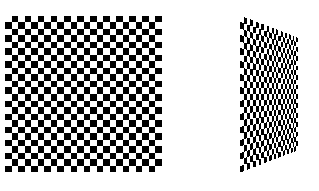
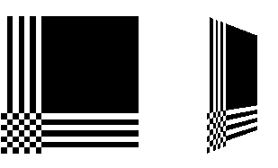
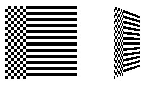

After reading this chapter, you'll be able to do the following:
Specify a texture map and how its coordinates relate to those of the
objects in your scene
Control how a texture image is filtered as it's applied to a fragment
Specify how the color values in the image combine with those of the
fragment to which it's being applied
Use automatic texture coordinate generation to produce effects like contour maps and environment maps
Texture mapping allows you to glue an image of a brick wall (obtained, perhaps, by scanning in a photograph of a real wall) to a polygon, and to draw the entire wall as a single polygon. Texture mapping ensures that all the right things happen as the polygon is transformed and rendered: When the wall is viewed in perspective, for example, the bricks decrease in size along with the wall as the wall gets farther from the viewpoint. Other uses for texture mapping include vegetation to be textured on large polygons representing the ground for a flight simulator; wallpaper patterns; and textures that make polygons appear to be made of natural substances such as marble, wood, or cloth. The possibilities are endless. Although it's most natural to think of applying textures to polygons, textures can be applied to all primitives - points, lines, polygons, bitmaps, and images. Plates 6, 8, 18-21, 24-27, and 29-31 all demonstrate the use of textures.
Because there are so many possibilities, texture mapping is a fairly large, complex subject, and you must make several programming choices when using it. For instance, you can map textures to surfaces made of a set of polygons or to curved surfaces, and you can repeat a texture in one or both directions to cover the surface. A texture can even be one-dimensional. In addition, you can automatically map a texture onto an object in such a way that the texture indicates contours or other properties of the item being viewed. Shiny objects can be textured so that they appear as if they were in the center of a room or other environment, reflecting the surroundings off their surfaces. Finally, a texture can be applied to a surface in different ways. It can be painted on directly (like a decal placed on a surface), it can be used to modulate the color the surface would have been painted otherwise, or it can be used to blend a texture color with the surface color. If this is your first exposure to texture mapping, you might find that the discussion in this chapter moves fairly quickly. As an additional reference, you might look at the chapter on texture mapping in Fundamentals of Three-Dimensional Computer Graphics by Alan Watt (Reading, Mass.: Addison-Wesley, 1990).
Textures are simply rectangular arrays of data - for example, color data, luminance data, or color and alpha data. The individual values in a texture array are often called texels. What makes texture mapping tricky is that a rectangular texture can be mapped to nonrectangular regions, and this must be done in a reasonable way.
Figure 9-1 illustrates the texture-mapping process. The left side of the figure represents the entire texture, and the black outline represents a quadrilateral shape whose corners are mapped to those spots on the texture. When the quadrilateral is displayed on the screen, it might be distorted by applying various transformations - rotations, translations, scaling, and projections. The right side of the figure shows how the texture-mapped quadrilateral might appear on your screen after these transformations. (Note that this quadrilateral is concave and might not be rendered correctly by OpenGL.)

Figure 9-1 : The Texture-Mapping Process
Notice how the texture is distorted to match the distortion of the quadrilateral. In this case, it's stretched in the x direction and compressed in the y direction; there's a bit of rotation and shearing going on as well. Depending on the texture size, the quadrilateral's distortion, and the size of the screen image, some of the texels might be mapped to more than one fragment, and some fragments might be covered by multiple texels. Since the texture is made up of discrete texels (in this case, 256 × 256 of them), filtering operations must be performed to map texels to fragments. For example, if many texels correspond to a fragment, they're averaged down to fit; if texel boundaries fall across fragment boundaries, a weighted average of the applicable texels is performed. Because of these calculations, texturing is computationally expensive, which is why many specialized graphics systems include hardware support for texture mapping.
This chapter covers the OpenGL's texture-mapping facility in the following major sections:
"Specifying the Texture" explains how to specify a two- or one-dimensional
texture. It also discusses how to use a texture's borders, how to supply
a series of related textures of different sizes, and how to control the
filtering methods used to determine how an applied texture is mapped to
screen coordinates.
"Modulating and Blending" discusses the methods used for painting a
texture onto a surface. You can choose to have the texture color values
replace those that would be used if texturing wasn't in effect, or you
can have the final color be a combination of the two.
"Assigning Texture Coordinates" describes how to compute and assign
appropriate texture coordinates to the vertices of an object. It also explains
how to control the behavior of coordinates that lie outside the default
range - that is, how to repeat or clamp textures across a surface.
"Automatic Texture-Coordinate Generation" shows you how to have OpenGL
automatically generate texture coordinates for you, in order to achieve
such effects as contour and environment maps.
"Advanced Features" explains how to manipulate the texture matrix stack and how to use the q texture coordinate.
Indicate how the texture is to be applied to each pixel.
Enable texture mapping.
Draw the scene, supplying both texture and geometric coordinates.
Using an advanced technique, called mipmapping, you can specify a single texture at many different resolutions; this allows you to avoid mapping a full-resolution image of a brick wall on a wall that's so far away from the viewer that it appears on the screen as a single pixel, for example. Also, the specification of the map can include boundary values to use when the object's texture coordinates get outside the valid range. Boundary values allow you to paste together multiple texture maps smoothly, thereby increasing the effective size of the largest available texture.
You must also indicate how texture coordinates outside the range [0.0,1.0] should be treated. Do the textures wrap to cover the object, or are they clamped to a boundary value?

Figure 9-2 : Texture-Mapped Squares
Example 9-1 : A Texture-Mappedfs Checkerboard: checker.c
#include <GL/gl.h>
#include <GL/glu.h>
#include "aux.h"
#define checkImageWidth 64
#define checkImageHeight 64
GLubyte checkImage[checkImageWidth][checkImageHeight][3];
void makeCheckImage(void)
{
int i, j, r, c;
for (i = 0; i < checkImageWidth; i++) {
for (j = 0; j < checkImageHeight; j++) {
c = ((((i&0x8)==0)^((j&0x8))==0))*255;
checkImage[i][j][0] = (GLubyte) c;
checkImage[i][j][1] = (GLubyte) c;
checkImage[i][j][2] = (GLubyte) c;
}
}
}
void myinit(void)
{
glClearColor (0.0, 0.0, 0.0, 0.0);
glEnable(GL_DEPTH_TEST);
glDepthFunc(GL_LEQUAL);
makeCheckImage();
glPixelStorei(GL_UNPACK_ALIGNMENT, 1);
glTexImage2D(GL_TEXTURE_2D, 0, 3, checkImageWidth,
checkImageHeight, 0, GL_RGB, GL_UNSIGNED_BYTE,
&checkImage[0][0][0]);
glTexParameterf(GL_TEXTURE_2D, GL_TEXTURE_WRAP_S, GL_CLAMP);
glTexParameterf(GL_TEXTURE_2D, GL_TEXTURE_WRAP_T, GL_CLAMP);
glTexParameterf(GL_TEXTURE_2D, GL_TEXTURE_MAG_FILTER,
GL_NEAREST);
glTexParameterf(GL_TEXTURE_2D, GL_TEXTURE_MIN_FILTER,
GL_NEAREST);
glTexEnvf(GL_TEXTURE_ENV, GL_TEXTURE_ENV_MODE, GL_DECAL);
glEnable(GL_TEXTURE_2D);
glShadeModel(GL_FLAT);
}
void display(void)
{
glClear(GL_COLOR_BUFFER_BIT | GL_DEPTH_BUFFER_BIT);
glBegin(GL_QUADS);
glTexCoord2f(0.0, 0.0); glVertex3f(-2.0, -1.0, 0.0);
glTexCoord2f(0.0, 1.0); glVertex3f(-2.0, 1.0, 0.0);
glTexCoord2f(1.0, 1.0); glVertex3f(0.0, 1.0, 0.0);
glTexCoord2f(1.0, 0.0); glVertex3f(0.0, -1.0, 0.0);
glTexCoord2f(0.0, 0.0); glVertex3f(1.0, -1.0, 0.0);
glTexCoord2f(0.0, 1.0); glVertex3f(1.0, 1.0, 0.0);
glTexCoord2f(1.0, 1.0); glVertex3f(2.41421, 1.0, -1.41421);
glTexCoord2f(1.0, 0.0); glVertex3f(2.41421, -1.0,-1.41421);
glEnd();
glFlush();
}
void myReshape(GLsizei w, GLsizei h)
{
glViewport(0, 0, w, h);
glMatrixMode(GL_PROJECTION);
glLoadIdentity();
gluPerspective(60.0, 1.0*(GLfloat)w/(GLfloat)h, 1.0, 30.0);
glMatrixMode(GL_MODELVIEW);
glLoadIdentity();
glTranslatef(0.0, 0.0, -3.6);
}
int main(int argc, char** argv)
{
auxInitDisplayMode (AUX_SINGLE | AUX_RGBA | AUX_DEPTH);
auxInitPosition (0, 0, 500, 500);
auxInitWindow (argv[0]);
myinit();
auxReshapeFunc (myReshape);
auxMainLoop(display);
}
The checkerboard texture is generated in the routine makeCheckImage(),
and all the texture-mapping initialization occurs in the routine myinit().
The single, full-resolution texture map is specified by glTexImage2D(),
whose parameters indicate the size of the image, type of the image, location
of the image, and other properties of it. See the next section for more
information about this command.
The next four calls to glTexParameter*() specify how the texture is to be wrapped (see "Repeating and Clamping Textures" ) and how the colors are to be filtered if there isn't an exact match between pixels in the texture and pixels on the screen (see "Controlling Filtering" ). Next, glTexEnv*() sets the drawing mode to GL_DECAL so that the textured polygons are drawn using the colors from the texture map (rather than taking into account what color the polygons would have been drawn without the texture). Finally, glEnable() turns on texturing.
The routine display() draws the two polygons. Note that texture coordinates are specified along with vertex coordinates. The glTexCoord*() command behaves similarly to the glNormal() command: It sets the current texture coordinates; any subsequent vertex command has those texture coordinates associated with it until glTexCoord*() is called again.
The checkerboard image on the tilted polygon might look wrong when you compile and run it on your machine - for example, it might look like two triangles with different projections of the checkerboard image on them. If so, try setting the parameter GL_PERSPECTIVE_CORRECTION_HINT to GL_NICEST and running the example again. To do this, use glHint().
Defines a two-dimensional texture. The target parameter is intended for future use by OpenGL; for this release, it must be set to the constant GL_TEXTURE_2D. You use the level parameter if you're supplying multiple resolutions of the texture map; with only one resolution, level should be 0. (See "Multiple Levels of Detail" for more information about using multiple resolutions.)
The next parameter, components, is an integer from 1 to 4 indicating which of the R, G, B, and A components are selected for use in modulating or blending. A value of 1 selects the R component, 2 selects the R and A components, 3 selects R, G, and B, and 4 selects R, B, G, and A. See "Modulating and Blending" for a discussion of how these selected components are used.
The width and height parameters give the dimensions of the texture image; border indicates the width of the border, which is usually zero. (See "Using a Texture's Borders." ) Both width and height must have the form 2m+2b, where m is an integer (which can have a different value for width than for height) and b is the value of border. The maximum size of a texture map depends on the implementation of OpenGL, but it must be at least 64 × 64 (or 66 × 66 with borders). If width or height is set to zero, texture mapping is effectively disabled.
The format and type parameters describe the format and data type of the texture image data. They have the same meaning as they do for glDrawPixels(), which is described in "Storing, Transforming, and Mapping Pixels." In fact, texture data is in the same format as the data used by glDrawPixels(), so the settings of such modes as GL_ALIGNMENT apply. (In the checkered-squares example, the call
glPixelStorei(GL_ALIGNMENT, 1);is made because the data in the example isn't padded at the end of each texel row.) The format parameter can be GL_COLOR_INDEX, GL_RGB, GL_RGBA, GL_RED, GL_GREEN, GL_BLUE, GL_ALPHA, GL_LUMINANCE, or GL_LUMINANCE_ALPHA - that is, the same formats available for glDrawPixels() with the exceptions of GL_STENCIL_INDEX and GL_DEPTH_COMPONENT. Similarly, the type parameter can be GL_BYTE, GL_UNSIGNED_BYTE, GL_SHORT, GL_UNSIGNED_SHORT, GL_INT, GL_UNSIGNED_INT, GL_FLOAT, or GL_BITMAP.
Finally, pixels contains the texture-image data. This data describes the texture image itself as well as its border.
The next sections give more detail about using the border and level parameters. The level parameter, which specifies textures of different resolutions, naturally raises the topic of filtering textures as they're applied; filtering is the subject of "Controlling Filtering." Finally, one-dimensional textures are discussed in "One-Dimensional Textures."
If you need to apply a larger texture map than your implementation of OpenGL allows, you can, with a little care, effectively make larger textures by tiling with several different textures. For example, if you need a texture twice as large as the maximum allowed size mapped to a square, draw the square as four subsquares, and load a different texture before drawing each piece.
Since only a single texture map is available at one time, this approach might lead to problems at the edges of the textures, especially if some form of linear filtering is enabled. The texture value to be used for pixels at the edges must be averaged with something off the edge, which, ideally, should come from the adjacent texture map. If you define a border for each texture whose texel values are equal to the values of the texels on the edge of the adjacent texture map, then when linear averaging takes place, the correct behavior results.
To do this correctly, notice that each map can have eight neighbors - one adjacent to each edge, and one touching each corner. The values of the texels in the corner of the border need to correspond with the texels in the texture maps that touch the corners. If your texture is an edge or corner of the whole tiling, you need to decide what values would be reasonable to put in the borders. The easiest reasonable thing to do is to copy the value of the adjacent texel in the texture map. Remember that the border values need to be supplied at the same time as the texture-image data, so you need to figure this out ahead of time.
A texture's border color is also used if the texture is applied in such a way that it only partially covers a primitive. See "Repeating and Clamping Textures" for more information about this situation.
Textured objects can be viewed, like any other objects in a scene, at different distances from the viewpoint. In a dynamic scene, for example, as a textured object moves farther from the viewpoint, the texture map must decrease in size along with the size of the projected image. To accomplish this, OpenGL has to filter the texture map down to an appropriate size for mapping onto the object, without introducing visually disturbing artifacts. To avoid such artifacts, you can specify a series of prefiltered texture maps of decreasing resolutions, called mipmaps, as shown in Figure 9-3 . Then, OpenGL automatically determines which texture map to use based on the size (in pixels) of the object being mapped. With this approach, the level of detail in the texture map is appropriate for the image that's drawn on the screen - as the image of the object gets smaller, the size of the texture map decreases. Mipmapping requires some extra computation, but, when it's not used, textures that are mapped onto smaller objects might shimmer and flash as the objects move.

Figure 9-3 : Mipmaps
This technique is called mipmapping. (Mip stands for the Latin multim im parvo, meaning "many things in a small place." Mipmapping uses some clever methods to pack the image data into memory. See "Pyramidal Parametrics " by Lance Williams, SIGGRAPH 1983 Proceedings.)
To use mipmapping, you provide all sizes of your texture in powers of 2 between the largest size and a 1 × 1 map. For example, if your highest-resolution map is 64 × 16, you must also provide maps of size 32 × 8, 16 × 4, 8 × 2, 4 × 1, 2 × 1, and 1 × 1. The smaller maps are typically filtered and averaged-down versions of the largest map in which each texel in a smaller texture is an average of the corresponding four texels in the larger texture. OpenGL doesn't require any particular method for calculating the smaller maps, however, so the differently sized textures could be totally unrelated.
To specify these textures, call glTexImage2D() once for each resolution of the texture map, with different values for the level, width, height, and image parameters. Starting with zero, level identifies which texture in the series is specified; with the previous example, the largest texture of size 64 × 16 would be declared with level = 0, the 32 × 8 texture with level = 1, and so on. In addition, for the mipmapped textures to take effect, you need to choose one of the appropriate filtering methods described in the next section.
Example 9-2 illustrates the use of a series of six texture maps decreasing in size from 32 × 32 to 1 × 1. This program draws a rectangle that extends from the foreground far back in the distance, eventually disappearing at a point, as shown in Figure J-27 . Note that sixty-four copies of the texture map are required to tile the rectangle, eight in each direction. To illustrate how one texture map succeeds another, each map has a different color.
Example 9-2 : A Mipmapping Example: mipmap.c
#include <GL/gl.h>
#include <GL/glu.h>
#include "aux.h"
GLubyte mipmapImage32[32][32][3];
GLubyte mipmapImage16[16][16][3];
GLubyte mipmapImage8[8][8][3];
GLubyte mipmapImage4[4][4][3];
GLubyte mipmapImage2[2][2][3];
GLubyte mipmapImage1[1][1][3];
void loadImages(void)
{
int i, j;
for (i = 0; i < 32; i++) {
for (j = 0; j < 32; j++) {
mipmapImage32[i][j][0] = 255;
mipmapImage32[i][j][1] = 255;
mipmapImage32[i][j][2] = 0;
}
}
for (i = 0; i < 16; i++) {
for (j = 0; j < 16; j++) {
mipmapImage16[i][j][0] = 255;
mipmapImage16[i][j][1] = 0;
mipmapImage16[i][j][2] = 255;
}
}
for (i = 0; i < 8; i++) {
for (j = 0; j < 8; j++) {
mipmapImage8[i][j][0] = 255;
mipmapImage8[i][j][1] = 0;
mipmapImage8[i][j][2] = 0;
}
}
for (i = 0; i < 4; i++) {
for (j = 0; j < 4; j++) {
mipmapImage4[i][j][0] = 0;
mipmapImage4[i][j][1] = 255;
mipmapImage4[i][j][2] = 0;
}
}
for (i = 0; i < 2; i++) {
for (j = 0; j < 2; j++) {
mipmapImage2[i][j][0] = 0;
mipmapImage2[i][j][1] = 0;
mipmapImage2[i][j][2] = 255;
}
}
mipmapImage1[0][0][0] = 255;
mipmapImage1[0][0][1] = 255;
mipmapImage1[0][0][2] = 255;
}
void myinit(void)
{
glEnable(GL_DEPTH_TEST);
glDepthFunc(GL_LEQUAL);
glShadeModel(GL_FLAT);
glTranslatef(0.0, 0.0, -3.6);
loadImages();
glPixelStorei(GL_UNPACK_ALIGNMENT, 1);
glTexImage2D(GL_TEXTURE_2D, 0, 3, 32, 32, 0,
GL_RGB, GL_UNSIGNED_BYTE, &mipmapImage32[0][0][0]);
glTexImage2D(GL_TEXTURE_2D, 1, 3, 16, 16, 0,
GL_RGB, GL_UNSIGNED_BYTE, &mipmapImage16[0][0][0]);
glTexImage2D(GL_TEXTURE_2D, 2, 3, 8, 8, 0,
GL_RGB, GL_UNSIGNED_BYTE, &mipmapImage8[0][0][0]);
glTexImage2D(GL_TEXTURE_2D, 3, 3, 4, 4, 0,
GL_RGB, GL_UNSIGNED_BYTE, &mipmapImage4[0][0][0]);
glTexImage2D(GL_TEXTURE_2D, 4, 3, 2, 2, 0,
GL_RGB, GL_UNSIGNED_BYTE, &mipmapImage2[0][0][0]);
glTexImage2D(GL_TEXTURE_2D, 5, 3, 1, 1, 0,
GL_RGB, GL_UNSIGNED_BYTE, &mipmapImage1[0][0][0]);
glTexParameterf(GL_TEXTURE_2D, GL_TEXTURE_WRAP_S,
GL_REPEAT);
glTexParameterf(GL_TEXTURE_2D, GL_TEXTURE_WRAP_T,
GL_REPEAT);
glTexParameterf(GL_TEXTURE_2D, GL_TEXTURE_MAG_FILTER,
GL_NEAREST);
glTexParameterf(GL_TEXTURE_2D, GL_TEXTURE_MIN_FILTER,
GL_NEAREST_MIPMAP_NEAREST);
glTexEnvf(GL_TEXTURE_ENV, GL_TEXTURE_ENV_MODE, GL_DECAL);
glEnable(GL_TEXTURE_2D);
}
void display(void)
{
glClear(GL_COLOR_BUFFER_BIT | GL_DEPTH_BUFFER_BIT);
glBegin(GL_QUADS);
glTexCoord2f(0.0, 0.0); glVertex3f(-2.0, -1.0, 0.0);
glTexCoord2f(0.0, 8.0); glVertex3f(-2.0, 1.0, 0.0);
glTexCoord2f(8.0, 8.0); glVertex3f(2000.0, 1.0, -6000.0);
glTexCoord2f(8.0, 0.0); glVertex3f(2000.0, -1.0, -6000.0);
glEnd();
glFlush();
}
void myReshape(GLsizei w, GLsizei h)
{
glViewport(0, 0, w, h);
glMatrixMode(GL_PROJECTION);
glLoadIdentity();
gluPerspective(60.0, 1.0*(GLfloat)w/(GLfloat)h, 1.0,
30000.0);
glMatrixMode(GL_MODELVIEW);
glLoadIdentity();
}
int main(int argc, char** argv)
{
auxInitDisplayMode (AUX_SINGLE | AUX_RGBA | AUX_DEPTH);
auxInitPosition (0, 0, 500, 500);
auxInitWindow (argv[0]);
myinit();
auxReshapeFunc (myReshape);
auxMainLoop(display);
}
Example 9-2 illustrates mipmapping by making each mipmap a different color
so that it's obvious when one map is replaced by another. In a real situation,
you define mipmaps so that the transition is as smooth as possible. Thus,
the maps of lower resolution are usually filtered versions of an original,
high-resolution map. The construction of a series of such mipmaps is a
software process, and thus isn't part of OpenGL, which is simply a rendering
library. Since mipmap construction is such an important operation, however,
the OpenGL Utility Library contains three routines that aid in the manipulation
of images to be used as texture maps.
Assuming that you have constructed the level 0, or highest-resolution
map, the routines gluBuild1DMipmaps() and gluBuild2DMipmaps()
construct and define the pyramid of mipmaps down to a resolution of 1 ×
1 (or 1, for one-dimensional texture maps). Both these routines require
that the original image already be suitable for a texture map, namely that
its dimensions must be powers of 2. Most scanned images don't satisfy this
property, so you have to scale the incoming image to some appropriate size.
The GLU provides the routine gluScaleImage() to perform such scaling.
int gluBuild1DMipmaps(GLenum target, GLint components,
GLint width, GLenum format, GLenum type, void *data);
int gluBuild2DMipmaps(GLenum target, GLint components,
GLint width, GLint height, GLenum format, GLenum type,
void *data);
Construct a series of mipmaps. The parameters for target, components, width, height, format, type, and data are exactly the same as those for glTexImage1D() and glTexImage2D(). A value of 0 is returned if all the mipmaps are constructed successfully; otherwise, a GLU error code is returned.
int gluScaleImage(GLenum format, GLint widthin, GLint heightin, GLenum typein, const void *datain, GLint widthout, GLint heightout, GLenum typeout, void *dataout);
Scales an image using the appropriate pixel-storage modes to unpack the data from datain. The format, typein, and typeout parameters can refer to any of the formats or data types supported by glDrawPixels(). The image is scaled using linear interpolation and box filtering (from the size indicated by widthin and heightin to widthout and heightout), and the resulting image is written to dataout. A value of 0 is returned on success, and a GLU error code is returned on failure.

Figure 9-4 : Texture Magnification and Minification
In some cases, it isn't obvious whether magnification or minification is called for. If the mipmap needs to be stretched (or shrunk) in both the x and y directions, then magnification (or minification) is needed. If the mipmap needs to be stretched in one direction and shrunk in the other, however, OpenGL makes a choice between magnification and minification that in most cases gives the best result possible. It's best to try to avoid these situations by using texture coordinates that map without such distortion; see "Computing Appropriate Texture Coordinates."
The following lines are examples of how to use glTexParameter*() to specify the magnification and minification filtering methods:
glTexParameteri(GL_TEXTURE_2D, GL_TEXTURE_MAG_FILTER, GL_NEAREST); glTexParameteri(GL_TEXTURE_2D, GL_TEXTURE_MIN_FILTER, GL_NEAREST);The first argument to glTexParameter*() is either GL_TEXTURE_2D or GL_TEXTURE_1D, depending on whether you're working with two- or one-dimensional textures. For the purposes of this discussion, the second argument is either GL_TEXTURE_MAG_FILTER or GL_TEXTURE_MIN_FILTER to indicate whether you're specifying the filtering method for magnification or minification. The third argument specifies the filtering method; Table 9-1 lists the possible values.
| Parameter | Values |
|---|---|
| GL_TEXTURE_MAG_FILTER | GL_NEAREST or GL_LINEAR |
| GL_TEXTURE_MIN_FILTER | GL_NEAREST, GL_LINEAR, GL_NEAREST_MIPMAP_NEAREST, GL_NEAREST_MIPMAP_LINEAR, GL_LINEAR_MIPMAP_NEAREST, or GL_LINEAR_MIPMAP_LINEAR |
If you choose GL_NEAREST, the texel with coordinates nearest the center of the pixel is used for both magnification and minification. This can result in aliasing artifacts (sometimes severe). If you choose GL_LINEAR, a weighted linear average of the 2x2 array of texels that lies nearest to the center of the pixel is used, again for both magnification and minification. When the texture coordinates are near the edge of the texture map, the nearest 2x2 array of texels might include some that are outside the texture map. In these cases, the texel values used depend on whether GL_REPEAT or GL_CLAMP is in effect and whether you've assigned a border for the texture, as described in "Using a Texture's Borders." GL_NEAREST requires less computation than GL_LINEAR and therefore might execute more quickly, but GL_LINEAR provides smoother results.
With magnification, even if you've supplied mipmaps, the largest texture map (level = 0) is always used. With minification, you can choose a filtering method that uses the most appropriate one or two mipmaps, as described in the next paragraph. (If GL_NEAREST or GL_LINEAR is specified with minification, the largest texture map is used.)
As shown in Table 9-1 , four additional filtering choices are available when minifying with mipmaps. Within an individual mipmap, you can choose the nearest texel value with GL_NEAREST_MIPMAP_NEAREST, or you can interpolate linearly by specifying GL_LINEAR_MIPMAP_NEAREST. Using the nearest texels is faster but yields less desirable results. The particular mipmap chosen is a function of the amount of minification required, and there's a cutoff point from the use of one particular mipmap to the next. To avoid a sudden transition, use GL_NEAREST_MIPMAP_LINEAR or GL_LINEAR_MIPMAP_LINEAR to linearly interpolate texel values from the two nearest best choices of mipmaps. GL_NEAREST_MIPMAP_LINEAR selects the nearest texel in each of the two maps and then interpolates linearly between these two values. GL_LINEAR_MIPMAP_LINEAR uses linear interpolation to compute the value in each of two maps and then interpolates lineraly between these two values. As you might expect, GL_LINEAR_MIPMAP_LINEAR generally produces the smoothest results, but it requires the most computation and therefore might be the slowest.
Defines a one-dimensional texture. All the parameters have the same meanings as for glTexImage2D(), except that the image is now a one-dimensional array of texels. As before, the value of width must be a power of 2 (2m, or 2m+2 if there's a border). You can supply mipmaps, and the same filtering options are available as well.
For a sample program that uses a one-dimensional texture map, see Example 9-3 .
Sets the current texturing function. target must be GL_TEXTURE_ENV. If pname is GL_TEXTURE_ENV_MODE, param can be GL_DECAL, GL_MODULATE, or GL_BLEND, to specify how texture values are to be combined with the color values of the fragment being processed. In decal mode and with a three-component texture, the texture's colors replace the fragment's colors. With either of the other modes or with a four-component texture, the final color is a combination of the texture's and the fragment's values. If pname is GL_TEXTURE_ENV_COLOR, param is an array of four floating-point values representing R, G, B, and A components. These values are used only if the GL_BLEND texture function has been specified as well.
The texturing function operates on selected components of the texture and the color values that would be used with no texturing. Recall that when you specify your texture map with glTexImage*d(), the third argument is the number of R, G, B, A components to be selected for each texel. A single selected component is interpreted as a luminance value (L); if there are two, the first is luminance, and the second is an alpha value (A). Three components form an RGB color triple (C), and four components provide an RGB triple and a value for alpha. Note that this selection is performed after the pixel-transfer function has been applied. Therefore, it makes sense, for example, to specify a texture with a GL_COLOR_INDEX image because the indices are converted to RGBA values by table lookup before they're used to form the texture image. These components are used by the texturing functions as shown in Table 9-2 .
| Components | Decal Mode | Modulate Mode | Blend Mode |
|---|---|---|---|
| 1 | undefined | C = LtCf,
A = Af |
C = (1-L
t)Cf + LtCc,
|
| 2 | undefined | C = LtCf,
A = AtAf |
C = (1-L
t)Cf + LtCc,
|
| 3 | C = Ct,
A = Af |
C = CtCf,
A = Af |
undefined |
| 4 | C = (1
t)Cf + AtCt,
|
C = CtCf,
A = AtAf |
undefined |
In the table, a subscript of t indicates a texture value, f indicates a fragment value, c indicates the values assigned with GL_TEXTURE_ENV_COLOR, and no subscript indicates the final, computed value. Also in the table, multiplication of a color triple by a scalar means multiplying each of the R, G, and B components by the scalar; multiplying (or adding) two color triples means multiplying (or adding) each component of the second by the corresponding component of the first.
Decal mode makes sense only if the number of components is three or four (remember that texture mapping doesn't work in color-index mode). With three selected components, the color that would have been painted in the absence of any texture mapping (the fragment's color) is replaced by the texture color, and its alpha is unchanged. With four components, the fragment's color is blended with the texture color in a ratio determined by the texture alpha, and the fragment's alpha is unchanged. You use decal mode in situations where you want to apply an opaque texture to an object - if you were drawing a soup can with an opaque label, for example.
For modulation, the fragment's color is modulated by the contents of the texture map. For one or two components, the color values are multiplied by the same value, so the texture map modulates between the fragment's color (if the luminance is 1) to black (if it's 0). With three or four components, each of the incoming color components is multiplied by a corresponding (possibly different) value in the texture. If there's an alpha value (which there is for two or four components), it's multiplied by the fragment's alpha. You need to use modulation to create a texture that responds to lighting conditions; most of the texture-mapping examples in the color plates use modulation for this reason.
Blending mode makes sense only for one- or two-component textures. The luminance is used somewhat like an alpha value to blend the fragment's color with the color specified by GL_TEXTURE_ENV_COLOR. With two components, the fragment's alpha is also multiplied by the alpha in the texture. See "Sample Uses of Blending" for the billboarding example, which uses a blended texture.
Texture coordinates can comprise one, two, three, or four coordinates. They're usually referred to as the s, t, r, and q coordinates to distinguish them from object coordinates (x, y, z, and w) and from evaluator coordinates (u and v; see Chapter 11 ). For one-dimensional textures, you use the s coordinate; for two-dimensional textures, you use s and t. Currently, the r coordinate is ignored (although it might have meaning in the future). The q coordinate, like w, is typically given the value 1 and can be used to create homogeneous coordinates; it's described as an advanced feature in "The q Coordinate." The command to specify texture coordinates, glTexCoord*(), is similar to glVertex*(), glColor*(), and glNormal*() - it comes in similar variations and is used the same way between glBegin() and glEnd() pairs. Usually, texture-coordinate values range between 0 and 1; values can be assigned outside this range, however, with the results described in "Repeating and Clamping Textures." void glTexCoord{1234}{sifd}{v}(TYPEcoords);
Sets the current texture coordinates (s, t, r, q). Subsequent calls to glVertex*() result in those vertices being assigned the current texture coordinates. With glTexCoord1*(), the s coordinate is set to the specified value, t and r are set to 0, and q is set to 1. Using glTexCoord2*() allows you to specify s and t; r and q are set to 0 and 1, respectively. With glTexCoord3*(), q is set to 1 and the other coordinates are set as specified. You can specify all coordinates with glTexCoord4*(). Use the appropriate suffix (s, i, f, or d) and the corresponding value for TYPE (GLshort, GLint, GLfloat, or GLdouble) to specify the coordinates' data type. You can supply the coordinates individually, or you can use the vector version of the command to supply them in a single array. Texture coordinates are multiplied by the 4x4 texture matrix before any texture mapping occurs, as described in "The Texture Matrix Stack." Note that integer texture coodinates are interpreted directly rather than being mapped to the range [-1,1] as normal coordinates are.
The next section discusses how to calculate appropriate texture coordinates. Instead of explicitly assigning them yourself, you can choose to have texture coordinates calculated automatically by OpenGL as a function of the vertex coordinates. This technique is described in "Automatic Texture-Coordinate Generation."
Now suppose that the wall is two-thirds as high as it is wide, that the texture is again square. To avoid distorting the texture, you need to map the wall to a portion of the texture map so that the aspect ratio of the texture is preserved. Suppose that you decide to use the lower two-thirds of the texture map to texture the wall. In this case, use texture coordinates of (0,0), (1,0), (1,2/3), and (0,2/3) for the texture coordinates as the wall vertices are traversed in a counterclockwise order.
As a slightly more complicated example, suppose you'd like to display a tin can with a label wrapped around it on the screen. To obtain the texture, you purchase a can, remove the label, and scan it in. Suppose the label is 4 units tall and 12 units around, which yields an aspect ratio of 3 to 1. Since textures must have aspect ratios of 2n to 1, you can either simply not use the top third of the texture, or you can cut and paste the texture until it has the necessary aspect ratio. Let's say you decide to not use the top third. Now suppose the tin can is a cylinder approximated by thirty polygons of length 4 units (the height of the can) and width 12/30 (1/30 of the circumference of the can). You can use the following texture coordinates for each of the thirty approximating rectangles:
1: (0, 0), (1/30, 0), (1/30, 2/3), (0, 2/3)
2: (1/30, 0), (2/30, 0), (2/30, 2/3), (1/30, 2/3)
3: (2/30, 0), (3/30, 0), (3/30, 2/3), (2/30, 2/3)
. . .
30: (29/30, 0), (1, 0), (1, 2/3), (29/30, 2/3)
Only a few curved surfaces such as cones and cylinders can be mapped to a flat surface without geodesic distortion. Any other shape requires some distortion. In general, the higher the curvature of the surface, the more distortion of the texture is required.
If you don't care about texture distortion, it's often quite easy to find a reasonable mapping. For example, consider a sphere whose surface coordinates are given by (cos &thgr; cos &phgr; , cos &thgr; sin &phgr; , sin &thgr; ), where 0 ≤ &thgr; ≤ 2 &pgr; , and 0 ≤ &phgr; ≤ &pgr; . The &thgr; - &phgr; rectangle can be mapped directly to a rectangular texture map, but the closer you get to the poles, the more distorted the texture is. The entire top edge of the texture map is mapped to the north pole, and the entire bottom edge to the south pole. For other surfaces, such as that of a torus (doughnut) with a large hole, the natural surface coordinates map to the texture coordinates in a way that produces only a little distortion, so it might be suitable for many applications. Figure 9-5 shows two tori, one with a small hole (and therefore a lot of distortion near the center) and one with a large hole (and only a little distortion).

Figure 9-5 : Texture-Map Distortion
If you're texturing spline surfaces generated with evaluators (see Chapter 11 ), the u and v parameters for the surface can sometimes be used as texture coordinates. In general, however, there's a large artistic component to successfully mapping textures to polygonal approximations of curved surfaces.
The other possibility is to clamp the texture coordinates: Any values greater than 1.0 are set to 1.0, and any values less than 0.0 are set to 0.0. Clamping is useful for applications where you want a single copy of the texture to appear on a large surface. If the surface-texture coordinates range from 0.0 to 10.0 in both directions, one copy of the texture appears in the lower corner of the surface. The rest of the surface is painted with the texture's border colors as needed. If you've chosen GL_LINEAR as the filtering method (see "Controlling Filtering" ), an equally weighted combination of the border color and the texture color is used, as follows:
If there is a border, then the texel from the border is used. Otherwise, GL_TEXTURE_BORDER_COLOR is used.
If you haven't specified a border with glTexImage*d(), the color value of GL_TEXTURE_BORDER_COLOR is used to paint the rest of the surface. By default, this value is (0, 0, 0, 0); use glTexParameter*() to change this value, as described near the end of this section.
In Example 9-1 , if the texture coordinates for the squares are mapped from 0.0 to 3.0 as follows, the result is as shown in Figure 9-6 .
glBegin(GL_POLYGON); glTexCoord2f(0.0, 0.0); glVertex3f(-2.0, -1.0, 0.0); glTexCoord2f(0.0, 3.0); glVertex3f(-2.0, 1.0, 0.0); glTexCoord2f(3.0, 3.0); glVertex3f(0.0, 1.0, 0.0); glTexCoord2f(3.0, 0.0); glVertex3f(0.0, -1.0, 0.0); glEnd(); glBegin(GL_POLYGON); glTexCoord2f(0.0, 0.0); glVertex3f(1.0, -1.0, 0.0); glTexCoord2f(0.0, 3.0); glVertex3f(1.0, 1.0, 0.0); glTexCoord2f(3.0, 3.0); glVertex3f(2.41421, 1.0, -1.41421); glTexCoord2f(3.0, 0.0); glVertex3f(2.41421, -1.0, -1.41421); glEnd();
Figure 9-6 : Repeating a Texture
In this case, the texture is repeated in both the s and t directions, since the following calls are made to glTexParameter*():
glTexParameterfv(GL_TEXTURE_2D, GL_TEXTURE_S_WRAP, GL_REPEAT); glTexParameterfv(GL_TEXTURE_2D, GL_TEXTURE_T_WRAP, GL_REPEAT);If GL_CLAMP is used instead of GL_REPEAT, you see the picture shown in Figure 9-7 .

Figure 9-7 : Clamping a Texture
Notice that the border colors are continued outside the range of the texture map. You can also clamp in one direction and repeat in the other, as shown in Figure 9-8 .

Figure 9-8 : Repeating and Clamping a Texture
You've now seen all the possible arguments for glTexParameter*(), which is summarized here.void glTexParameter{if}{v}(GLenum target, GLenum pname, TYPE param);
Sets various parameters that control how a texture is treated as it's applied to a fragment. The target parameter is either GL_TEXTURE_2D or GL_TEXTURE_1D to indicate a two- or one-dimensional texture. The possible values for pname and param are shown in Table 9-3 . You can use the vector version of the command to supply an array of values for GL_TEXTURE_BORDER_COLOR, or you can supply them individually using the nonvector version. If these values are supplied as integers, they're converted to floating-point according to Table 5-1 ; they're also clamped to the range [0,1]
| Parameter | Values |
|---|---|
| GL_TEXTURE_WRAP_S | GL_CLAMP, GL_REPEAT |
| GL_TEXTURE_WRAP_T | GL_CLAMP, GL_REPEAT |
| GL_TEXTURE_MAG_FILTER | GL_NEAREST, GL_LINEAR |
| GL_TEXTURE_MIN_FILTER | GL_NEAREST, GL_LINEAR, GL_NEAREST_MIPMAP_NEAREST, GL_NEAREST_MIPMAP_LINEAR, GL_LINEAR_MIPMAP_NEAREST, GL_LINEAR_MIPMAP_LINEAR |
| GL_TEXTURE_BORDER_COLOR | any four values in [0, 1] |
Specifies the functions for automatically generating texture coordinates. The first parameter, coord, must be GL_S, GL_T, GL_R, or GL_Q to indicate whether texture coordinate s, t, r, or q is to be generated. The pname parameter is GL_TEXTURE_GEN_MODE, GL_OBJECT_PLANE, or GL_EYE_PLANE. If it's GL_TEXTURE_GEN_MODE, param is an integer (or, in the vector version of the command, points to an integer) that's either GL_OBJECT_LINEAR, GL_EYE_LINEAR, or GL_SPHERE_MAP. These symbolic constants determine which function is used to generate the texture coordinate. With either of the other possible values for pname, param is either a pointer to an array of values (in the vector version) or a single value specifying parameters for the texture-generation function.
generated coordinate = p1x0 + p2y0 + p3z0 + p4w0
The p1, ..., p4 values are supplied as the param argument to glTexGen*() with pname set to GL_OBJECT_PLANE. With p1, ..., p4 correctly normalized, this function gives the distance from the vertex to a plane. For example, if p1 = p3 = p4 = 0 and p2 = 1, the function gives the distance between the vertex and the plane y = 0. The distance is positive on one side of the plane, negative on the other, and zero if the vertex lies on the plane.
In Example 9-3 , equally spaced contour lines are drawn on a teapot; the lines indicate the distance from the plane y = 0. Since only one property is being shown (the distance from the plane), a one-dimensional texture map suffices. The texture map is a constant green color, except that at equally spaced intervals it includes a red mark. Since the teapot is sitting on the x-y plane, the contours are all perpendicular to its base. Figure J-23 shows the picture drawn by the program.
Example 9-3 : Automatic Texture-Coordinate Generation: texgen.c
#include <GL/gl.h>
#include <GL/glu.h>
#include "aux.h"
#define stripeImageWidth 32
GLubyte stripeImage[3*stripeImageWidth];
void loadStripeImage(void)
{
int j;
for (j = 0; j < stripeImageWidth; j++) {
stripeImage[3*j] = (j<=4) ? 255 : 0;
stripeImage[3*j+1] = (j>4) ? 255 : 0;
stripeImage[3*j+2] = 0;
}
}
GLfloat sgenparams[] = {1.0, 0.0, 0.0, 0.0};
void myinit(void)
{
glClearColor (0.0, 0.0, 0.0, 0.0);
loadStripeImage();
glPixelStorei(GL_UNPACK_ALIGNMENT, 1);
glTexEnvf(GL_TEXTURE_ENV, GL_TEXTURE_ENV_MODE, GL_MODULATE);
glTexParameterf(GL_TEXTURE_1D, GL_TEXTURE_WRAP_S,
GL_REPEAT);
glTexParameterf(GL_TEXTURE_1D, GL_TEXTURE_MAG_FILTER,
GL_LINEAR);
glTexParameterf(GL_TEXTURE_1D, GL_TEXTURE_MIN_FILTER,
GL_LINEAR);
glTexImage1D(GL_TEXTURE_1D, 0, 3, stripeImageWidth, 0,
GL_RGB, GL_UNSIGNED_BYTE, stripeImage);
glTexGeni(GL_S, GL_TEXTURE_GEN_MODE, GL_OBJECT_LINEAR);
glTexGenfv(GL_S, GL_OBJECT_PLANE, sgenparams);
glEnable(GL_DEPTH_TEST);
glDepthFunc(GL_LEQUAL);
glEnable(GL_TEXTURE_GEN_S);
glEnable(GL_TEXTURE_1D);
glEnable(GL_CULL_FACE);
glEnable(GL_LIGHTING);
glEnable(GL_LIGHT0);
glEnable(GL_AUTO_NORMAL);
glEnable(GL_NORMALIZE);
glFrontFace(GL_CW);
glCullFace(GL_BACK);
glMaterialf (GL_FRONT, GL_SHININESS, 64.0);
}
void display(void)
{
glClear(GL_COLOR_BUFFER_BIT | GL_DEPTH_BUFFER_BIT);
glPushMatrix ();
glRotatef(45.0, 0.0, 0.0, 1.0);
auxSolidTeapot(2.0);
glPopMatrix ();
glFlush();
}
void myReshape(GLsizei w, GLsizei h)
{
glViewport(0, 0, w, h);
glMatrixMode(GL_PROJECTION);
glLoadIdentity();
if (w <= h) glOrtho (-3.5, 3.5, -3.5*(GLfloat)h/(GLfloat)w,
3.5*(GLfloat)h/(GLfloat)w, -3.5, 3.5);
else glOrtho (-3.5*(GLfloat)w/(GLfloat)h,
3.5*(GLfloat)w/(GLfloat)h, -3.5, 3.5, -3.5, 3.5);
glMatrixMode(GL_MODELVIEW);
glLoadIdentity();
}
int main(int argc, char** argv)
{
auxInitDisplayMode (AUX_SINGLE | AUX_RGBA | AUX_DEPTH);
auxInitPosition (0, 0, 200, 200);
auxInitWindow (argv[0]);
myinit();
auxReshapeFunc (myReshape);
auxMainLoop(display);
}
As shown, you have to enable texture-coordinate generation for the s
coordinate by passing GL_TEXTURE_GEN_S to glEnable(); if you were
generating other coordinates, you'd have to enable them with GL_TEXTURE_GEN_T,
GL_TEXTURE_GEN_R, or GL_TEXTURE_GEN_Q. (Use glDisable() with the
appropriate constant to disable coordinate generation.) Also note the use
of GL_REPEAT to cause the contour lines to be repeated across the teapot.
If you change the line that defines the parameter array sgenparams to
GLfloat sgenparams[] = {1, 1, 1, 0};
the contour stripes are parallel to the plane x + y + z
= 0, slicing across the teapot at an angle, as shown in Figure J-24 .
The GL_OBJECT_LINEAR function calculates the texture coordinates in the model's coordinate system. In Example 9-3 , where the contour lines are perpendicular to the base of the teapot, they would remain so, no matter how the teapot was rotated or viewed. Sometimes you'd like the contour lines to be calculated relative to the eye's coordinate system. In other words, you want to multiply the vector (p1p2p3p4) by the inverse of the modelview matrix before calculating the distance to the plane. If you specify GL_TEXTURE_GEN_MODE with GL_EYE_LINEAR, this is exactly what happens. The texture coordinate is generated with the following function:
generated coordinate = p1'xe + p2'ye + p3'ze + p4'we
where (p1' p2' p3' p4') = (p1p2p3p4)M-1
In this case, (xe, ye, ze, we) are the eye coordinates of the vertex, and p1, ..., p4 are supplied as the param argument to glTexGen*() with pname set to GL_EYE_PLANE. The primed values are calculated only once, at the time they're specified, so this operation isn't as computationally expensive as it looks. To see the effect of this function, in the example above, change sgenparams back to {1, 0, 0, 0}, and change GL_OBJECT_LINEAR to GL_EYE_LINEAR. The result is red stripes parallel to the y-z plane from the eye's point of view, as shown in Figure J-25 .
In all these examples, a single texture coordinate is used to generate contours. The s and t texture coordinates can be generated independently, however, to indicate the distances to two different planes. With a properly constructed two-dimensional texture map, the resulting two sets of contours can be viewed simultaneously. For an added level of complexity, you can calculate the s coordinate using GL_OBJECT_LINEAR and the t coordinate using GL_EYE_LINEAR.
Environment mapping is an approximation based on the assumption that the items in the environment are far away compared to the surfaces of the shiny object - that is, it's a small object in a large room. With this assumption, to find the color of a point on the surface, take the ray from the eye to the surface, and reflect the ray off the surface. The direction of the reflected ray completely determines the color to be painted there. Encoding a color for each direction on a flat texture map is equivalent to putting a polished perfect sphere in the middle of the environment and taking a picture of it with a camera that has a lens with a very long focal length placed far away. Mathematically, the lens has an infinite focal length and the camera is infinitely far away. The encoding therefore covers a circular region of the texture map, tangent to the top, bottom, left, and right edges of the map. The texture values outside the circle make no difference, as they are never accessed in environment mapping.
To make a perfectly correct environment texture map, you need to obtain a large silvered sphere, take a photograph of it in some environment with a camera located an infinite distance away and with a lens that has an infinite focal length, and scan in the photograph. To approximate this result, you can use a scanned-in photograph of an environment taken with an extremely wide-angle (or fish-eye) lens. Figure J-28 shows a photograph taken with a such a lens and the results when that image is used as an environment map.
Once you've created a texture designed for environment mapping, you need to invoke OpenGL's environment-mapping algorithm. This algorithm finds the point on the surface of the sphere with the same tangent surface as the point on the object being rendered, and it paints the object's point with the color visible on the sphere at the corresponding point. Programmatically, all you need to do is change these lines from Example 9-3 :
glTexGenfv(GL_S, GL_OBJECT_LINEAR, sgenparams); glEnable(GL_TEXTURE_GEN_S);to:
glTexGenfv(GL_S, GL_SPHERE_MAP, 0); glTexGenfv(GL_T, GL_SPHERE_MAP, 0); glEnable(GL_TEXTURE_GEN_S); glEnable(GL_TEXTURE_GEN_T);The GL_SPHERE_MAP constant is what invokes the environment mapping. As shown, you need to specify it for both the s and t directions. You don't have to specify any parameters for the texture-coordinate generation function, however.
This section describes how to manipulate the texture matrix stack and how to use the q coordinate. Both techniques are considered advanced, since you don't need them for many applications of texture mapping.
When the four texture coordinates (s, t, r, q) are multiplied by the texture matrix, the resulting vector (s' t' r' q') is interpreted as homogeneous texture coordinates. In other words, the texture map is indexed by s'/q' and t'/q' . (Remember that r'/q' is currently ignored, but it might be used in the future.) The texture matrix is actually the top matrix on a stack whose depth must be at least two. All the standard matrix-manipulation commands such as glPushMatrix(), glPopMatrix(), glMultMatrix(), and glRotate() can be applied to the texture matrix. To modify the current texture matrix, you need to set the matrix mode to GL_TEXTURE, as follows:
glMatrixMode(GL_TEXTURE); /* enter texture matrix mode */ glRotate(...); /* ... other matrix manipulations ... */ glMatrixMode(GL_MODELVIEW); /* back to modelview mode */
For example, suppose you want to model a spotlight that has some nonuniform pattern - brighter in the center, perhaps, or noncircular, because of flaps or lenses that modify the shape of the beam. You can emulate shining such a light on a flat surface by making a texture map that corresponds to the shape and intensity of a light, and then projecting it on the surface in question using projection transformations. Projecting the cone of light onto surfaces in the scene requires a perspective transformation (q ≠ 1), since the lights might shine on surfaces that aren't perpendicular to them. A second perspective transformation occurs because the viewer sees the scene from a different (but perspective) point of view. See Figure J-37 for an example, and see "Fast Shadows and Lighting Effects Using Texture Mapping" by Mark Segal, Carl Korobkin, Rolf van Widenfelt, Jim Foran, and Paul Haeberli, SIGGRAPH 1992 Proceedings, (Computer Graphics, 26:2, July 1992, p. 249-252) for more details.
Another example might arise if the texture map to be applied comes from a photograph that itself was taken in perspective. In the same way as for spotlights, the final view depends on the combination of two perspective transformations.